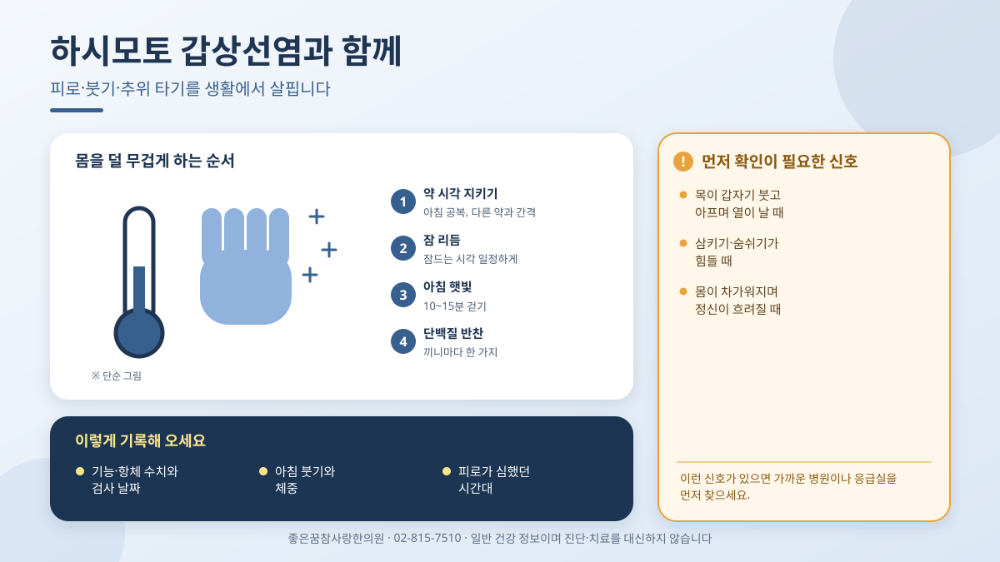

이종호 한의사 감수좋은꿈참사랑한의원 대표원장 (한의사 면허번호 19769)발행 2026-11-26 · 수정 2026-11-26
이 글의 차례
아침에 눈을 떴는데 눈두덩이 부어 있고, 이불 밖으로 나가기가 유난히 힘듭니다. 남들은 덥다는데 혼자 카디건을 걸치고, 오후만 되면 머리가 멍해집니다. 그러다 검사에서 하시모토 갑상선염이라는 낯선 이름을 듣게 되었다며 진료실에 오시는 분들이 있습니다.
처음 들으면 이름부터 어렵습니다. 갑상선염이라니 염증이 심한 건지, 평생 약을 먹어야 하는 건지, 내가 뭘 잘못해서 생긴 건지 질문이 꼬리를 뭅니다. 그 마음을 충분히 이해합니다. 이름이 낯설수록 걱정은 더 크게 느껴지니까요.
하시모토 갑상선염은 우리 몸의 면역이 갑상선을 남의 것처럼 여겨 천천히 공격하는 상태입니다. 그래서 자가면역 갑상선염이라고도 부릅니다. 염증은 대개 아주 느리게 진행되고, 기능이 정상인 채로 오래 지내는 분도 많고, 기능이 서서히 떨어지는 분도 있습니다.
이 글에서는 하시모토 갑상선염이 어떤 상태인지, 왜 피로와 붓기가 따라오는지, 그리고 내분비내과 진료를 이어 가면서 생활과 한의원 진료를 어떻게 곁들이면 좋은지를 말씀드리려 합니다.
하시모토 갑상선염은 어떤 상태인가요
갑상선은 목 앞에 있는 작은 기관으로, 몸의 대사 속도를 정하는 호르몬을 만듭니다. 호르몬이 충분하면 몸이 적당히 따뜻하고 장도 제 속도로 움직이며 기운이 납니다. 호르몬이 부족해지면 몸 전체가 천천히, 무겁게 돌아가는 느낌이 듭니다.
하시모토 갑상선염에서는 면역 세포가 갑상선 조직에 오래 머물며 염증을 일으킵니다. 혈액 검사에서 갑상선에 대한 항체가 높게 나오는 것이 특징이고, 초음파에서는 갑상선 조직이 거칠고 고르지 않게 보이기도 합니다.
중요한 점은 항체가 있다는 것과 기능이 떨어졌다는 것이 같은 말이 아니라는 것입니다. 항체는 높아도 호르몬 수치는 정상인 분이 많고, 이런 경우에는 정기적으로 기능 검사를 하며 지켜보는 경우가 많습니다. 기능이 떨어지면 그때 약을 상의하게 됩니다.
왜 피로와 붓기, 추위 타기가 생길까요?
갑상선 호르몬이 줄면 몸이 에너지를 만드는 속도가 느려집니다. 그래서 같은 일을 해도 쉽게 지치고, 몸이 열을 덜 만들어 손발이 차고 추위를 많이 타게 됩니다. 장의 움직임도 느려져 변비가 생기기 쉽습니다.
붓기는 몸 안의 물과 단백질이 조직 사이에 머무는 방식이 달라지면서 생깁니다. 아침에 눈두덩과 얼굴이 붓고, 손가락 반지가 꽉 끼는 느낌으로 알아차리는 분이 많습니다. 체중이 조금 늘어난 것처럼 느껴지는 것도 이 붓기와 관련이 있는 경우가 있습니다.
이 밖에도 피부와 머리카락이 건조해지고, 생리량이 늘거나 주기가 흔들리고, 기분이 가라앉고 집중이 어려운 느낌이 들 수 있습니다. 하나하나는 흔한 불편이라 갑상선과 연결 짓지 못하고 오래 지내는 분도 많습니다.
하시모토 갑상선염과 헷갈리기 쉬운 상태
피곤하고 붓고 추위를 탄다고 모두 갑상선 때문은 아닙니다. 빈혈이 있을 때도 쉽게 지치고 손발이 차며, 잠이 부족하거나 우울감이 깊을 때도 몸이 무겁고 의욕이 떨어집니다. 그래서 갑상선 수치와 함께 다른 검사 결과도 나란히 보는 것이 좋습니다.
반대로 하시모토 갑상선염 초기에는 염증 때문에 갑상선 호르몬이 일시적으로 많이 나와 두근거림, 더위 타기, 손 떨림이 잠깐 나타나기도 합니다. 이런 경우 기능 항진과 헷갈릴 수 있어서, 검사 결과를 보고 담당 선생님이 판단합니다.
갱년기 무렵에는 피로, 붓기, 기분 변화, 열감이 겹쳐 무엇 때문인지 더 헷갈립니다. 하시모토 갑상선염이 있는 분이라면 갱년기 증상과 갑상선 증상을 나눠 기록해 두시면 진료 때 도움이 됩니다.
약을 먹기 시작했다면 알아 두실 것
기능이 떨어져 갑상선 호르몬 약을 드시게 되었다면, 이 약은 부족한 호르몬을 채워 주는 약입니다. 그래서 수치를 보며 용량을 맞추는 기간이 필요하고, 맞춰진 뒤에도 정기적으로 검사를 받으며 용량을 조정하게 됩니다.
갑상선 약은 보통 아침 공복에 물과 함께 드시고, 식사나 다른 약과는 시간을 두도록 안내받는 경우가 많습니다. 철분제, 칼슘제, 위장약 일부는 흡수에 영향을 줄 수 있으니 함께 드시는 약이 있다면 처방한 선생님께 알려 주세요.
몸이 가벼워졌다고 약을 줄이거나 멈추시면 다시 몸이 무거워질 수 있습니다. 약을 바꾸고 싶으신 마음이 드실 때는 그 이유를 적어서 처방한 선생님과 상의하시는 것이 순서입니다.
하시모토 갑상선염이 있는 분들이 자주 묻는 것
첫째, 미역이나 김을 먹어도 되느냐는 질문입니다. 평소 식탁에 오르는 정도라면 크게 걱정하지 않으셔도 되는 경우가 많습니다. 다만 다시마 환이나 해조류 즙처럼 요오드를 많이 드시는 방식은 담당 선생님과 먼저 상의하시길 권합니다.
둘째, 글루텐이나 특정 음식을 끊어야 하느냐는 질문입니다. 인터넷에는 여러 식단이 소개되지만, 모든 분께 같은 방식이 맞는 것은 아닙니다. 무리하게 한꺼번에 끊기보다 내 몸이 불편한 음식이 있는지를 기록으로 먼저 확인해 보시는 것이 좋습니다.
셋째, 임신을 준비해도 되느냐는 질문입니다. 하시모토 갑상선염이 있어도 임신을 준비하는 분은 많습니다. 다만 임신 준비와 임신 중에는 갑상선 수치를 더 세심하게 맞추는 경우가 많으니, 계획이 있다면 먼저 알리고 산부인과와 내분비내과에 상의해 주세요.
마음과 기운이 함께 처질 때
하시모토 갑상선염이 있는 분들 가운데 기분이 가라앉고 의욕이 떨어진다고 말씀하시는 분이 적지 않습니다. 몸이 무거우니 움직이기 싫고, 움직이지 않으니 더 처지는 흐름에 빠지기 쉽습니다. 내가 게을러서 그런 것이 아니라는 점을 먼저 알아 두셨으면 합니다.
수치가 맞춰진 뒤에도 피로가 남는 분이 있습니다. 이럴 때는 잠의 질, 끼니의 단백질, 햇빛을 보는 시간, 하루의 움직임을 하나씩 점검해 보는 것이 도움이 됩니다. 한 가지 원인을 찾기보다 여러 작은 이유를 함께 다듬는다고 생각하시면 됩니다.
기분이 몇 주째 가라앉고 일상이 힘들 만큼 무기력하다면, 정신건강의학과 상담도 함께 고려해 보세요. 몸의 진료와 마음의 진료는 서로 방해하지 않고 나란히 갈 수 있습니다.
계절과 생활 리듬에 따라 달라지는 몸
하시모토 갑상선염이 있는 분들은 계절이 바뀔 때 몸의 변화를 더 크게 느끼시는 경우가 많습니다. 겨울에는 손발이 더 차고 아침에 일어나기가 힘들며, 여름에는 냉방 때문에 오히려 몸이 굳고 붓는다고 말씀하시는 분도 계십니다.
야근이나 교대 근무로 잠이 들쭉날쭉한 시기, 큰 일을 앞두고 긴장이 이어지는 시기에도 피로가 몰려옵니다. 수치는 그대로인데 몸이 유난히 무거운 날이 있다면, 그 주의 잠과 일정부터 돌아보시길 권합니다.
몸살이나 감기를 앓고 난 뒤 회복이 더딘 것도 흔한 일입니다. 이럴 때는 평소 일정을 조금 덜어 내고, 끼니와 잠을 먼저 챙기며 며칠 여유를 두시는 편이 회복에 도움이 될 수 있습니다. 회복이 유난히 길어진다면 담당 선생님께 알려 수치를 확인해 보세요.
가족이 함께 알아 두면 좋은 것
피로와 붓기, 추위 타기는 겉으로 잘 드러나지 않아서 가족이 이해하기 어려운 경우가 많습니다. 쉬어도 피곤하다는 말이 핑계처럼 들릴까 봐 혼자 참는 분도 계십니다. 진단 이름과 함께 어떤 불편이 있는지 가족에게 나눠 말해 두시면 좋습니다.
하시모토 갑상선염은 가족 가운데 비슷한 갑상선 질환이 있는 경우가 종종 있다고 알려져 있습니다. 부모님이나 형제자매가 비슷한 피로와 붓기를 호소한다면 검진 때 갑상선 검사를 함께 받아 보도록 권해 보세요.
집안일이나 아침 준비처럼 몸을 많이 쓰는 일을 가족이 조금씩 나눠 맡아 주는 것만으로도 큰 힘이 됩니다. 몸이 무거운 아침에 한두 가지만 덜어 내도, 하루를 버티는 힘이 달라진다고 말씀하시는 분이 많습니다.
진료 날 가족이 함께 오시면 집에서 본 모습, 예를 들어 코를 고는지, 낮에 자주 조는지, 말이 느려졌는지 같은 이야기를 함께 들을 수 있어 진찰에도 도움이 됩니다.
먼저 이렇게 여쭙니다
처음 오시면 대략 이런 순서로 여쭙니다. 미리 생각해 오시면 이야기가 한결 수월해집니다.
- 진단은 언제, 어떤 검사로 받으셨나요?
- 최근 갑상선 기능 수치와 항체 수치는 어떠신가요?
- 갑상선 약을 드신다면 이름, 용량, 드시는 시각은 어떻게 되나요?
- 피로가 가장 심한 시간대와 붓기가 심한 때는 언제인가요?
- 잠, 대변, 생리 주기, 체중에 변화가 있으셨나요?
- 함께 드시는 약이나 영양제가 있나요?
모든 질문에 답하지 못하셔도 괜찮습니다. 결과지와 약 봉투만 있어도 이야기의 큰 줄기는 잡힙니다.
일상에서 먼저 해 볼 수 있는 것
생활로 염증을 없앤다고 말씀드리기는 어렵지만, 몸이 덜 무겁게 하루를 보내도록 돕는 일은 일상에서 할 수 있습니다. 한꺼번에 많이 바꾸기보다 하나씩 골라 보세요.
- 갑상선 약은 정해진 시각에, 다른 약과는 시간을 두고 드시기
- 잠드는 시각과 깨는 시각을 일정하게 맞추기
- 아침 햇빛을 보며 10~15분 걷기
- 끼니마다 달걀, 두부, 생선 같은 단백질 반찬 한 가지 챙기기
- 짠 국물을 줄여 아침 붓기 살펴보기
- 무리한 운동보다 숨이 약간 찰 정도의 꾸준한 움직임
변비가 있다면 물과 채소, 아침 식사 뒤 화장실에 앉아 보는 습관을 먼저 챙겨 보세요. 장이 느려진 몸에는 일정한 리듬이 가장 큰 도움이 됩니다.
추위를 많이 타는 분은 배와 발목을 따뜻하게 하고, 실내에서도 얇은 겉옷을 걸쳐 두세요. 찬물보다 미지근한 물을 자주 마시는 것도 몸을 편하게 하는 작은 습관입니다.
한의원에서 함께 살필 수 있는 경우
- 수치는 맞춰졌는데도 피로와 몸의 무거움이 이어지는 경우
- 아침마다 얼굴과 손이 붓고 다리가 무거운 경우
- 손발이 차고 추위를 많이 타서 잠이 얕은 경우
- 변비나 소화 더딤, 생리 주기 흔들림이 함께 있는 경우
- 기운이 처지고 마음까지 가라앉는 날이 잦은 경우
좋은꿈참사랑한의원에서는 진찰을 마친 뒤 피로가 어디서 오는지, 붓기와 냉기가 어떻게 나타나는지, 잠과 소화가 어떤지를 함께 보고 지금 상태에 맞는 방향을 정합니다. 침이나 온열 관리, 한약 상담 가운데 무엇이 맞는지는 진찰한 내용을 바탕으로 정합니다.
한약을 상의할 때는 갑상선 약과 함께 드시는 약을 모두 확인하고 신중하게 정합니다. 갑상선 약은 처방한 선생님과 상의 없이 멈추지 않고, 정기 검사는 내분비내과에서 이어 가시도록 안내합니다. 임신 중이시거나 준비 중이라면 먼저 알려 주시고 산부인과와 상의해 주세요.
이렇게 기록해 오시면 상담이 쉬워집니다
- 갑상선 기능·항체 검사 결과지와 검사 날짜
- 약 드신 시각과 빠뜨린 날
- 아침 붓기 정도와 체중
- 잠든 시각, 깬 시각, 낮의 피로가 심했던 시간
- 대변 횟수와 생리 시작일
- 기분이 유난히 처졌던 날
몇 주만 적어 보셔도 피로와 붓기가 잠, 식사, 생리 주기와 어떻게 맞물리는지가 보이기 시작합니다. 그 흐름이 다음 진료에서 무엇을 바꿔 볼지를 정하는 실마리가 됩니다.
오래 함께 지내는 갑상선을 위해
하시모토 갑상선염은 오래 곁에 두고 지켜보는 상태입니다. 정기 검사를 받고, 약이 있다면 제때 드시고, 몸의 신호를 기록하는 것만으로도 이미 중요한 일을 하고 계신 겁니다.
그 위에 잠 하나, 아침 햇빛 하나, 단백질 반찬 하나를 더해 보세요. 몸이 조금씩 덜 무거워지는 흐름을 진료실에서 함께 살피겠습니다. 다음에 오실 때는 2주 동안의 붓기와 잠 기록부터 함께 펼쳐 보면 좋겠습니다. 빈칸이 많아도 괜찮으니 편하게 가져와 주세요. 기록은 완벽함보다 꾸준함이 더 쓸모 있습니다.
이런 증상은 먼저 확인이 필요합니다
- 목이 갑자기 붓고 아프며 열이 나거나 삼키기·숨쉬기가 힘든 경우
- 심하게 처지고 몸이 차가워지며 정신이 흐려지거나 가슴이 심하게 두근거리는 경우
이런 신호가 있으면 한의원보다 가까운 병원이나 응급실을 먼저 찾으세요.
함께 읽으면 좋은 글
- 갑상선 기능 저하나 항진이 있을 때 한의원 진료는 어떻게 함께 살피나요?
- 손발이 찬 수족냉증, 레이노·갑상선·빈혈과 어떻게 구분하나요?
- 충분히 쉬어도 몸이 늘 피곤한 만성피로는 어떤 점을 살펴보나요?
- 류마티스 등 자가면역질환으로 치료 중일 때 근육통 한방 진료를 같이 받아도 되나요?
- 인바디에서 체수분이나 부종 항목이 신경 쓰일 때는요?

여쭙는 것
- 진단은 언제, 어떤 검사로 받으셨나요?
- 최근 갑상선 기능 수치와 항체 수치는 어떠신가요?
- 갑상선 약을 드신다면 이름, 용량, 드시는 시각은 어떻게 되나요?
생활에서 해 볼 것
- 갑상선 약은 정해진 시각에, 다른 약과는 시간을 두고 드시기
- 잠드는 시각과 깨는 시각을 일정하게 맞추기
- 아침 햇빛을 보며 10~15분 걷기
한의원에서 함께 살필 것
- 수치는 맞춰졌는데도 피로와 몸의 무거움이 이어지는 경우
- 아침마다 얼굴과 손이 붓고 다리가 무거운 경우
- 손발이 차고 추위를 많이 타서 잠이 얕은 경우
먼저 확인이 필요한 신호
- 목이 갑자기 붓고 아프며 열이 나거나 삼키기·숨쉬기가 힘든 경우
- 심하게 처지고 몸이 차가워지며 정신이 흐려지거나 가슴이 심하게 두근거리는 경우
한눈에 보는 표
| 구분 | 핵심 |
|---|---|
| 여쭙는 것 | 진단은 언제, 어떤 검사로 받으셨나요? 최근 갑상선 기능 수치와 항체 수치는 어떠신가요? |
| 생활에서 해 볼 것 | 갑상선 약은 정해진 시각에, 다른 약과는 시간을 두고 드시기 잠드는 시각과 깨는 시각을 일정하게 맞추기 |
| 한의원에서 함께 살필 것 | 수치는 맞춰졌는데도 피로와 몸의 무거움이 이어지는 경우 아침마다 얼굴과 손이 붓고 다리가 무거운 경우 |
| 먼저 확인이 필요한 신호 | 목이 갑자기 붓고 아프며 열이 나거나 삼키기·숨쉬기가 힘든 경우 심하게 처지고 몸이 차가워지며 정신이 흐려지거나 가슴이 심하게 두근거리는 경우 |
자주 묻는 질문
하시모토 갑상선염이면 평생 약을 먹어야 하나요?
항체가 있어도 기능이 정상이라 약 없이 정기 검사로 지켜보는 분도 많습니다. 기능이 떨어져 약을 드시게 되었다면 용량과 기간은 처방한 선생님과 상의해 정합니다.
갑상선 약과 한약을 함께 먹어도 되나요?
드시는 약을 모두 확인하고 신중하게 정합니다. 갑상선 약과는 드시는 시간을 나눠 안내하고, 필요하면 처방한 선생님과 상의하시도록 말씀드립니다.
미역국을 먹으면 안 되나요?
평소 식탁에 오르는 정도라면 크게 걱정하지 않으셔도 되는 경우가 많습니다. 해조류 즙이나 환처럼 많이 드시는 방식은 담당 선생님과 먼저 상의해 보세요.
수치는 정상인데 왜 계속 피곤할까요?
잠, 끼니, 빈혈, 마음의 지침처럼 피로를 만드는 다른 이유가 함께 있는 경우가 많습니다. 한의원에서는 잠과 소화, 냉기와 붓기를 함께 살피며 하나씩 나눠 봅니다.
좋은꿈참사랑한의원은 재진 때 지난번 이야기부터 이어서 여쭙니다. 진료시간과 예약은 오시는 길에서 확인하세요.
어디서 상담받을 수 있나요?
좋은꿈참사랑한의원은 서울 동작구 만양로2길 2 신성빌딩 3층·5층(서울 동작구 상도동, 7호선 상도역 3번 출구 근처)에 있습니다. 한의사 3명(이종호 대표원장, 조영기 수석진료원장, 정원영 진료원장)이 진료합니다. 진료시간은 평일 09:30~20:00(점심 13:00~14:00), 토·일·공휴일 09:30~15:00이며, 방문 전 전화로 확인을 권합니다. 예약은 네이버 예약, 카카오톡 상담, 전화 02-815-7510로 받습니다.
이 글은 일반적인 건강 정보이며 개인의 진단이나 치료를 대신하지 않습니다. 증상이 있거나 복용 중인 약이 있다면 진료를 통해 확인하세요. 치료 효과는 개인마다 다를 수 있습니다.
작성 기준: 일반적으로 알려져 있는 건강 정보를 참고해 정리했습니다(대표원장 감수). 증상 기록은 1~2주 동안 하루 1회, 비슷한 시간에 적어 오시면 지난 상태와 비교하기 쉽습니다.